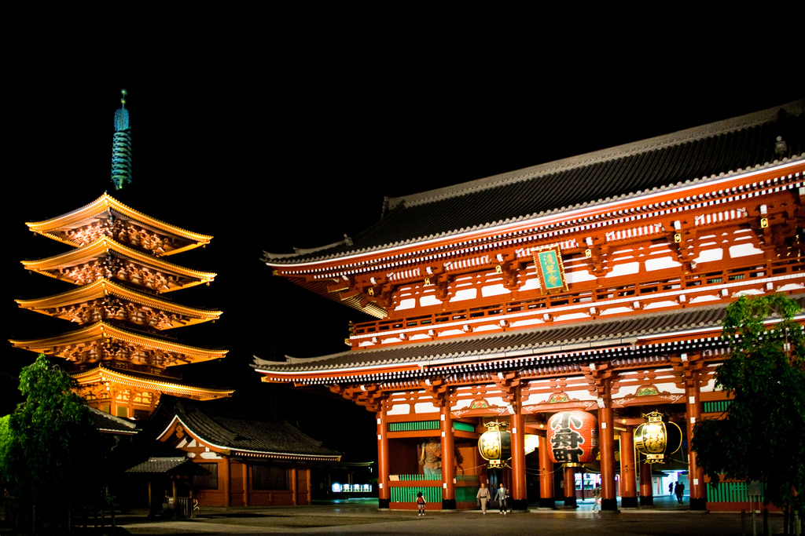

<!DOCTYPE html>

<html lang="en">
    <head>
        <meta charset="utf-8" />
        <title>淺草寺 (東京) </title>
    </head>
    <body background="000.jpg"></body></body>
    <font color="red" size="20"<h1><em>淺草寺</em><h1></font>
    <h2>淺草寺，位於淺草地區的中心位置。是東京地區最重要的佛教寺廟，而且也是最多觀光客來訪的寺廟之一</h2>
    <h3>每年過年的時候都會來淺草寺參拜！通常是在 1 月 3 日。仲見世商店街上滿滿都是人，而且還有許多販售食品的店家，您可以邊走邊吃</3>
    
    <a href="002.html">第二頁</a>
    <a href="003.html">第三頁</a>
    <a href="004.html">第四頁</a>
    </body>
</html>
